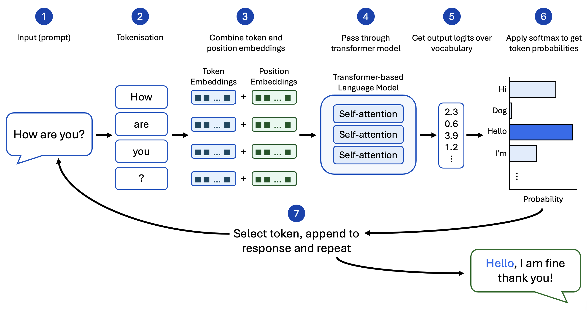
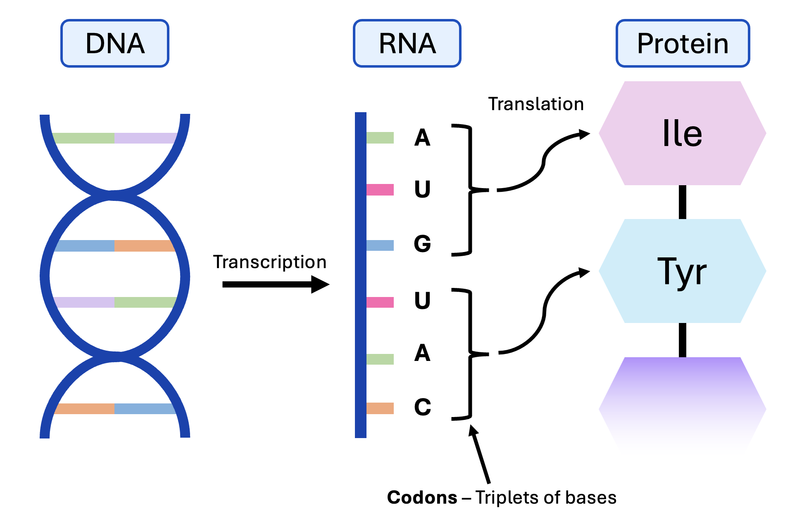
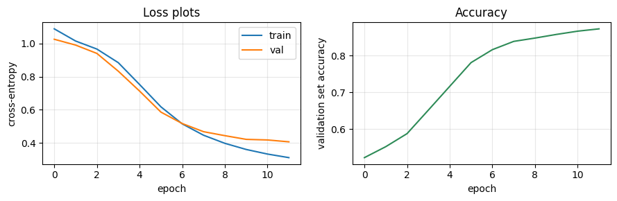

4. Drug Discovery Application - Translating Proteins Back to DNA¶
Objectives
Explain how sequence-to-sequence models and codon degeneracy motivate protein-to-DNA prediction for mRNA vaccine design
Build a transformer prediction head with positional embeddings on top of frozen ESM2 features
Apply codon validity constraints so predicted DNA sequences encode the correct amino acids
Evaluate the codon predictor against a highest-frequency-codon baseline
These notes support Session4_An_Application_to_Drug_Discovery_Workshop.ipynb.
Recap of Session 3¶
In the last session, we moved from image data to sequence data. We talked about protein language models, including how amino acid sequences are tokenised, encoded into embeddings, and how these embeddings could be used for downstream tasks.
So far, most of this workshop has been exploratory. We used autoencoders to learn latent spaces, used those latent spaces for interpretation and classification, and used a pre-trained protein language model as a feature extractor. In this final session, we move toward a practical application in drug discovery.
Sequence-to-Sequence Learning¶
Large language models, including commercial models like ChatGPT and Claude, take a sequence of text as input (e.g. a question) and output another sequence of text (e.g. an answer). These models are autoregressive, which means they continuously add tokens (e.g. words) onto the input sequence until a special stop token is added.
How does the model “add tokens”? Well, each model has its own vocabulary - this is the full set of tokens that a model knows. For example, ChatGPT has a vocabulary of just over 100000 tokens. In language models, tokens can be whole words, parts of words, individual letters (e.g. in acronyms), and punctuation.
So, at each step of the autoregressive process, the model is selecting one token from its vocabulary to be appended to the sequence. It does this by assigning each token a probability and then either selecting the token with highest probability or sampling the token from the resulting probability distribution. You can think of this like performing “classification” at each step, but instead of predicting classes, we’re picking tokens.
Putting this all together, we end up with a model which can take one sequence as input and give another sequence as output.


A conceptual overview of language-model generation: text is tokenised, combined with positional information, processed by transformer self-attention layers, converted into logits over a vocabulary, transformed into token probabilities and used to select the next token in the output sequence.¶
A Drug Discovery Problem: Mapping Protein to DNA¶
So, how could we adapt this for drug discovery? Let’s consider one of the most well-known sequences in biology: DNA.
A DNA sequence is made up of four different nucleotide bases: A, C, G and T. The sequence of these bases encodes the “recipes” for making different proteins. A DNA molecule is first transcribed into single-strand messenger RNA (mRNA), which is then translated into an amino acid sequence.
However, genetic code is what we call degenerate, which means that many different sequences can encode for the same protein. What matters is that the codons, which are triplets of nucleotide bases, must be in order. Each codon encodes for one amino acid, but several codons can encode the same amino acid. For example, the amino acid proline can be encoded by four different codons.
So, in theory, if I have proline in my amino acid sequence, I could swap out whichever codon I have with one of the other three. The issue, is that codon placement can affect things like expression level, molecular stability, secondary structure. So, if I was trying to recreate this protein, I’d like to get as close to the true DNA sequence as possible.
If you’re wondering how this is applicable to drug discovery, imagine that the protein we’re interested in is a spike protein from a virus, like SARS-CoV-2.
Spike proteins are expressed on the surface of viral particles, so they’re highly exposed to the immune system. In order to create a vaccine for that virus, we could inject the body with mRNA which encodes for that spike protein. The body’s cells would then synthesise harmless versions of that protein, and the immune system would create antibodies, and build a long-term memory to fight off that virus in future.
We can’t do any of that, if we don’t know the mRNA sequence, but we can infer it from the DNA sequence, which we could predict from the protein itself. We could just randomly pick codons which correspond to the amino acids we need, but that can make the mRNA unstable or impact the overall expression level, so perhaps there is a way to learn the true sequence from context instead.
In this final session, we’ll try to predict DNA sequences from amino acid sequences using parallel sequence-to-sequence generation. Our input is still amino acid sequences, so we can get an embedding from ESM-2 again. Then, we’ll build our own transformer as a prediction head to assign probabilities over possible codon tokens at each position in the sequence.


DNA bases are transcribed into mRNA, and mRNA codons (triplets of bases) are translated into an amino acid sequence.¶
Vocabulary: Amino Acids and Codons¶
As we’ve discussed, language models work with a vocabulary. In human language, the vocabulary might be word pieces. In the next notebook, our vocabulary is made up of two parts:
An amino acid vocabulary: 20 standard amino acids plus a pad and stop token.
A codon vocabulary: 64 possible DNA triplets plus a pad and mask token.
The padding tokens are again used to fill in the empty space in sequences, so we can feed multiple sequences through in batches. The stop token tells the model when we have reached the end of our amino acid sequence. The mask tokens are what initially fill the codon sequence, our model learns to replace each mask token with a real codon token.
The prediction head sees a masked codon sequence which looks like this:
[MASK, MASK, MASK, ..., PAD, PAD]
It’s the predictor’s job to predict the true codon at each mask position using the ESM-2 protein features, amino acid identity and positional information. The result should look something like this:
[ATG, CGA, ATT, ..., PAD, PAD]
Note
DNA vs RNA During transcription, when DNA is converted to RNA, the nucleotide base uracil (U) replaces thymine (T). Since we can infer the intended RNA sequence from DNA and vice versa, we will treat them as the same (e.g. we will use U and T interchangeably throughout this session).
This is what our vocabulary looks like in Python:
# Define our amino acid vocabulary
# First, we define the 20 standard amino acid one-letter codes as a hard-coded string
STD_AA = 'ACDEFGHIKLMNPQRSTVWY'
# Special tokens: PAD fills empty space, MASK is what we feed in for "unknown" positions
PAD, MASK = '<pad>', '<mask>'
# Full list of amino acid tokens, starting with PAD
AA_TOKENS = [PAD] + list(STD_AA) + ['_']
# Create look-up dictionaries for mapping from amino acid string to integer and vice versa
aa2id = {t: i for i, t in enumerate(AA_TOKENS)}; PAD_S = aa2id[PAD]
id2aa = {i: t for t, i in aa2id.items()}
# Define our codon vocabulary
# This creates a list of all 64 possible three-letter DNA combinations
CODONS = [a+b+c for a in 'ACGT' for b in 'ACGT' for c in 'ACGT']
# Now we add pad and mask
CODON_TOKENS = [PAD, MASK] + CODONS
# Create look-up dictionaries for mapping from codon string to integer and vice versa
cd2id = {t: i for i, t in enumerate(CODON_TOKENS)}
id2cd = {i: t for t, i in cd2id.items()}
Valid Codon Constraints¶
Not every codon can encode every amino acid, so to make sure the codon accounts for this constraint we’ll use a validity matrix, showing which codons are possible for each amino acid. This matrix has 22 rows (one for each amino acid token) and 66 columns (one for each codon token). The value in row \(i\), column \(j\) is True if amino acid \(i\) can be encoded by codon \(j\), and False otherwise.
We could omit this step and just hope the model learns to reproduce valid codon sequences, which isn’t guaranteed, and even then, the model has to spend its capacity on learning synonymous codons rather than predicting a useful sequence. A validity matrix guarantees our sequence will be valid at the amino-acid level and reduces the number of choices the model has to learn.
During prediction, each codon (even impossible codons) gets assigned a logit, which should eventually become a probability. Impossible codons can be hidden by automatically setting their logits to negative infinity - after softmax, this becomes 0, which essentially removes all chance of them being selected.

Applying a codon validity matrix before softmax: invalid codons are assigned logits of negative infinity, so their probabilities become zero and only biologically valid codons can be selected.¶
Here is what the validity matrix looks like in Python:
# Imports
import torch
from collections import defaultdict
# Here, we define the complete codon to amino acid map - this shows the exact amino acid each codon encodes
TRANSL = {
'TTT':'F','TTC':'F','TTA':'L','TTG':'L','CTT':'L','CTC':'L','CTA':'L','CTG':'L',
'ATT':'I','ATC':'I','ATA':'I','ATG':'M','GTT':'V','GTC':'V','GTA':'V','GTG':'V',
'TCT':'S','TCC':'S','TCA':'S','TCG':'S','AGT':'S','AGC':'S',
'CCT':'P','CCC':'P','CCA':'P','CCG':'P','ACT':'T','ACC':'T','ACA':'T','ACG':'T',
'GCT':'A','GCC':'A','GCA':'A','GCG':'A','TAT':'Y','TAC':'Y',
'TAA':'_','TAG':'_','TGA':'_',
'CAT':'H','CAC':'H','CAA':'Q','CAG':'Q','AAT':'N','AAC':'N','AAA':'K','AAG':'K',
'GAT':'D','GAC':'D','GAA':'E','GAG':'E','TGT':'C','TGC':'C','TGG':'W',
'CGT':'R','CGC':'R','CGA':'R','CGG':'R','AGA':'R','AGG':'R',
'GGT':'G','GGC':'G','GGA':'G','GGG':'G',
}
# Create the validity matrix
# Map each amino acid to the list of codon IDs that code for it (this basically creates the inverse of TRANSL above)
AA_TO_VALID = defaultdict(list)
for cd, aa in TRANSL.items(): AA_TO_VALID[aa].append(cd2id[cd])
# Create the Boolean validity matrix - VALID[a, c] is True if codon c codes for amino acid a
VALID = torch.zeros(SRC_VOCAB, TGT_VOCAB, dtype=torch.bool)
for aa, codon_ids in AA_TO_VALID.items():
VALID[aa2id[aa], codon_ids] = True
Why Use Transformers¶
As in Session 3, ESM-2 is used as a frozen feature extractor. This time we keep per-residue features rather than mean pooling them into one protein-level vector. Remember that ESM-2 is a transformer-based network. Transformers are good at sequence modelling because they use attention, which lets each position in the sequence look at other positions and decide which ones matter for the current prediction.
For codon prediction, the best codon for one amino acid may depend on neighbouring amino acids, local sequence composition, or organism-specific codon usage. The context really matters.
In our notebook, we’ll build a small transformer prediction head on top of the ESM2 features. This is useful for codon prediction because the best codon at one position may depend on other positions in the same gene. A transformer can learn these dependencies more flexibly than a model that looks only at a small local window.
In practice, we provide the amino acid embedding from ESM-2, a custom codon embedding using PyTorch’s built-in embedding layer (the same for all masked codons), and a positional embedding which records amino/codon position in sequence. For each masked entry in the codon embedding, the model outputs logits for the codon vocabulary. We then apply the validity constraint and select the highest-probability codon.

An architecture diagram showing amino acid sequence input, ESM2 per-residue features, codon mask embeddings, positional embeddings, a transformer encoder, and output logits over the codon vocabulary at each position.¶
Discussion
In Session 3 we mean-pooled ESM2’s embeddings, but here we keep them per amino acid. Why the difference?
Solution
In Session 3, we predicted one label for the whole protein, so one vector per protein was enough. Here the output is one codon per amino acid, so we need a distinct feature vector at every position, and pooling would destroy exactly the information we need.
Positional Embeddings¶
Transformers do not account for sequence order on their own. This is obviously undesirable for codon prediction, so, we’ll add positional information through a positional embedding.
This assigns a numeric representation to each position in the sequence. For example, a simple positional embedding could be to number the amino acids by the order they appear, so that a sequence like AWGWAG becomes \([1, 2, 3, 4, 5, 6]\).
In practice, we may use sinusoidal embeddings, which encode position through a more complex mathematical transformation. The result is a vector of numbers for each position which informs the model that each position is different. This tells the model that the first A in a sequence is not necessarily equivalent to the hundredth A.
In a sinusoidal positional embedding, each position is represented by a pattern of sine and cosine values. These vectors are added to the token representations so the model can distinguish positions.
Why sine and cosine? - They have useful mathematical properties such as being continuous functions and are easy to differentiate during backpropagation.
Sinusoidal positional embeddings use waves of different frequencies, represented by the following formulas:
Here, \(pos\) is the sequence position, \(i\) is any index of the embedding vector, and \(d\) is the size of the embedding (length of the vector). You’ll find more information about sinusoidal embeddings in the notebook.
You don’t need to memorise the formula, just remember that each position receives a unique, smooth pattern that the transformer can use to recover sequence order.
In the notebooks, we represent our sinusoidal positional embedding as follows:
# Define the sinusoidal position embedding, which encodes each token's position in the sequence
class SinusoidalPosEnc(nn.Module):
# Pass in the important arguments the class needs - the dimension of our embedding and the max sequence length
def __init__(self, d_model, max_len=MAX_LEN):
super().__init__()
# Take our token positions and encode them as a vector of sine and cosine terms
# Here, we define an empty table that will hold one row per position
pe = torch.zeros(max_len, d_model)
# Create a vector of position indices (0, 1, 2, ...)
pos = torch.arange(0, max_len, dtype=torch.float).unsqueeze(1)
# Now we calculate the denominator
div = 1.0 / (10000.0 ** (torch.arange(0, d_model, 2, dtype=torch.float) / d_model))
# Then even dimensions get sines
pe[:, 0::2] = torch.sin(pos * div)
# And odd dimensions get cosines
pe[:, 1::2] = torch.cos(pos * div)
# Save the table as a buffer (this is a tensor which the model sees, but doesn't train)
self.register_buffer('pe', pe.unsqueeze(0))
# We add the position encoding directly to the token embeddings
def forward(self, x): return x + self.pe[:, : x.size(1)]
Discussion
Why use sinusoidal embeddings rather than simply numbering the positions 1, 2, 3, …?
Solution
Integers are unbounded, so position 1000 would dominate the token representation numerically, and the scale would differ wildly between short and long sequences. Sine and cosine values stay bounded in \([-1, 1]\), give every position a unique smooth pattern, are continuous and easily differentiable, and extend naturally to positions longer than those seen in training.
Cross-Entropy Loss and Accuracy¶
At every real sequence position, the model produces logits over the codon vocabulary. Since this is essentially the same task as classification, we can use the same loss term, cross-entropy, to compare each predicted codon token with the true codon token.
We can also calculate the accuracy as the percentage of correctly predicted codons. In the next notebook, we’ll build a network that trains to a relatively high accuracy, in a relatively short number of epochs (as seen below).


Training loss, validation loss and masked validation accuracy for the codon predictor.¶
Baselines¶
In order to determine just how well our model is performing, we’ll compare its predictions to a baseline. A good baseline provides a simple, easy-to-compute best guess for each codon.
In this case, we’ll use the highest-frequency codons (HFC) as a baseline - this means that for each amino acid, the baseline always picks the most common codon seen in the training data.
If our transformer can’t beat this baseline, then the model may not be learning sequence context at all. It may just be learning to pick the most common codon for each amino acid.
I’ll leave it up to you to work through the notebook and see just how well our model performs in practice.
Overview of the Final Practical Session¶
In the final practical session, we will build a small sequence-to-sequence model for codon prediction.
The workflow is:
Load amino acid-DNA sequence pairs from the CodonTransformer dataset - this provides pairs of amino acids and the DNA sequences which encode them. We’ll again restrict our analysis to E. coli proteins for brevity.
Tokenise amino acid sequences and codon sequences.
Extract amino acid sequence features from ESM-2 (this time keeping per-residue representations).
Append a small transformer model onto the end of ESM-2.
Add sinusoidal positional embeddings so the transformer can understand sequence order.
Train the transformer head to predict a codon for each amino acid position.
Apply the validity constraint so predicted codons encode the correct amino acids.
Evaluate whether the predicted DNA sequences are accurate reconstructions (especially when compared to the HFC baseline).